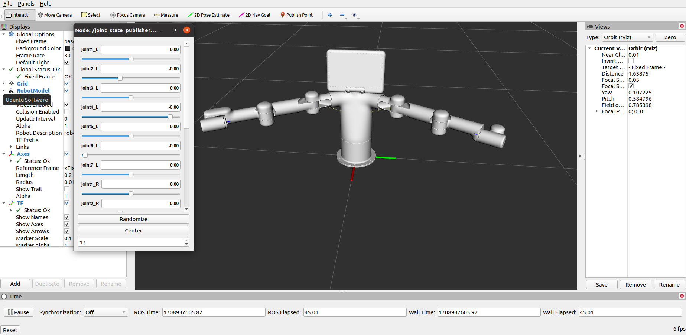
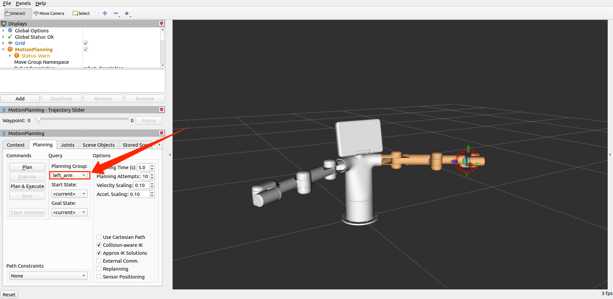
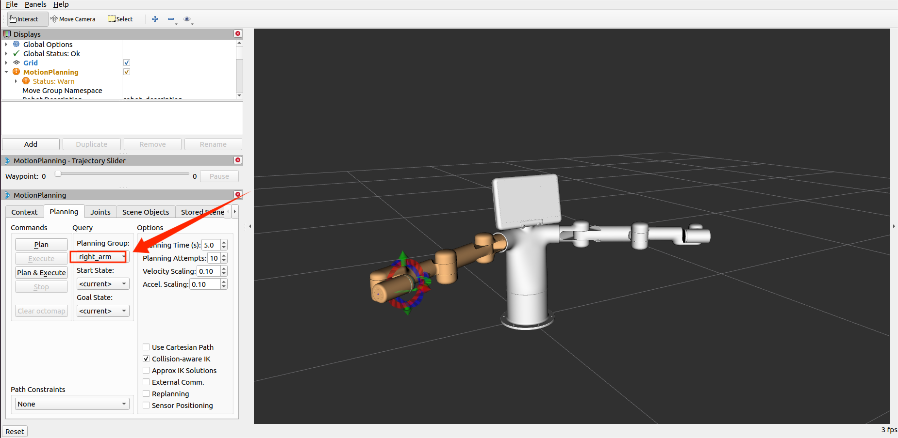
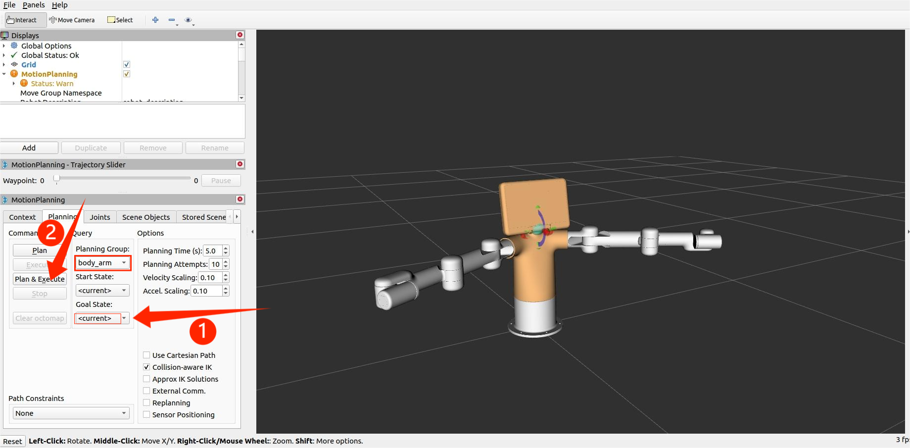

Control of the robotic arm
1 Slider Control
Open a ROS1 environment terminal and run the command:
roslaunch mercury_b1 slider_control.launch
rviz and a slider component will be opened, and you will see the following interface:

Then you can control the model in rviz to make it move by dragging the slider. If you want the real mycobot to move with the model, you need to open another ROS1 environment terminal:
rosrun mercury_b1 slider_control.py
Note: Since the robot arm will move to the current position of the model when the command is input, make sure that the model in rviz does not appear to be worn out before you use the command.
Do not drag the slider quickly after connecting the robot arm to prevent damage to the robot arm.
2 Model Following
In addition to the above controls, we can also let the model move by following the real robot arm. Open a ROS1 environment terminal:
rosrun mercury_b1 follow_display.py
Then open another ROS1 environment terminal and run the command:
roslaunch mercury_b1 mercury_follow.launch
It will open rviz to show the model following effect.

5 Moveit use
mercury_b1 has integrated the MoveIt section.
Open a ROS1 environment terminal and run the command:
roslaunch mercury_b1_moveit mercury_b1.launch
If you need to have the real robot arm execute the plan synchronously, you need to open another ROS1 environment terminal and run the command:
rosrun mercury_b1_moveit sync_plan.py
Moveit has three control groups, and the operating results are as follows:
1. Left arm control group: Plan the movement direction of the left arm by dragging the trackball, and then execute the plan.

2. Right arm control group: Plan the movement direction of the right arm by dragging the trackball, and then execute the plan.

3. Waist control group: You can set the target posture and then execute the planning.
